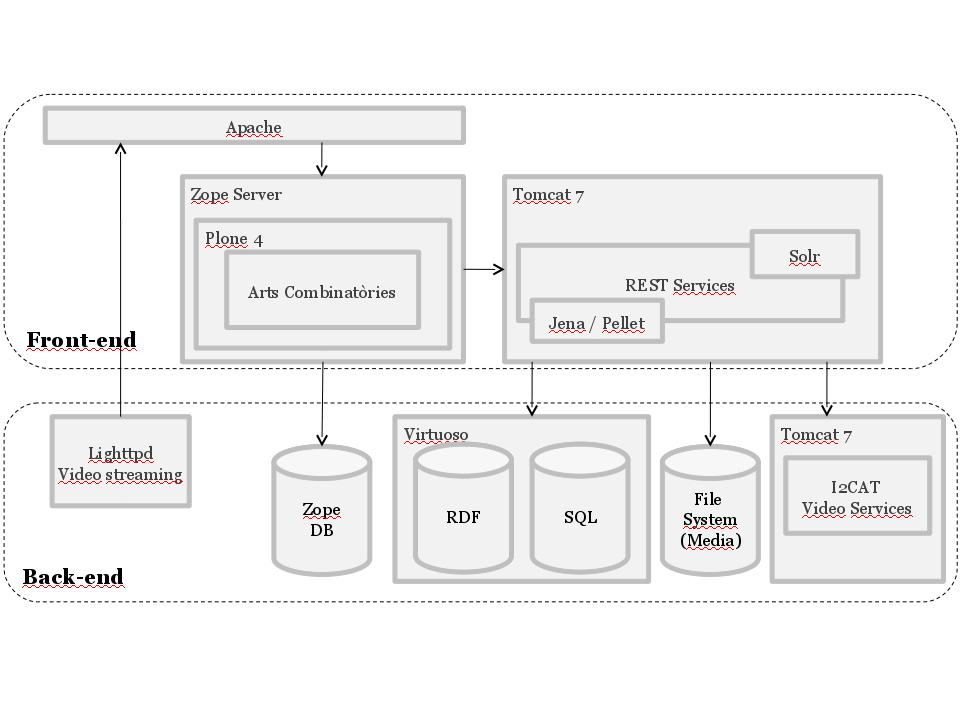

Introduction
Arts Combinatòries is a general purpose Semantic Web (SW) focused on cultural visualizable contents (i.e media content). As such, it provides fully configurable templates to allow any user or institution store its semantic data (OWL/RDF) and link that to its media files. This documentation deeps further on template configuration and other useful parameters for customization.
Key features
Other key features are:
- REST services that allow complete interaction with all system functionalities.
- Media (audio, video, image, text) storage and video format conversion capabilities.
- Scriptable legal protection for medias to accomplish with any license of cultural objects.
- Support for users and groups, that makes possible to grant roles and permisions.
- Search capabilities based on Solr engine. Fully configurable indexing, filtering and autocomplete features.
- OAI-PMH compliance to allow LinkedData with third-parties.
The initial application of this SW is the Fundació Antoni Tàpies cultural archive.
Technical elements
This project is composed of different components that must be installed (see Installation) in order to get started. Here a description of each:
- Tomcat 7: Stores the core application that implements REST services, Solr search engine, and Video services.
- Plone 4: View layer that act as the REST services client and generates HTML content.
- Openlink Virtuoso: Triplestore database to store Ontology (OWL specification), RDF data, and to process SPARQL and reasoning.
